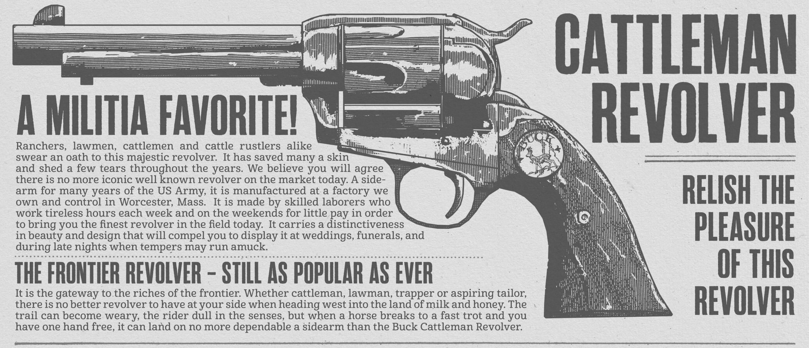
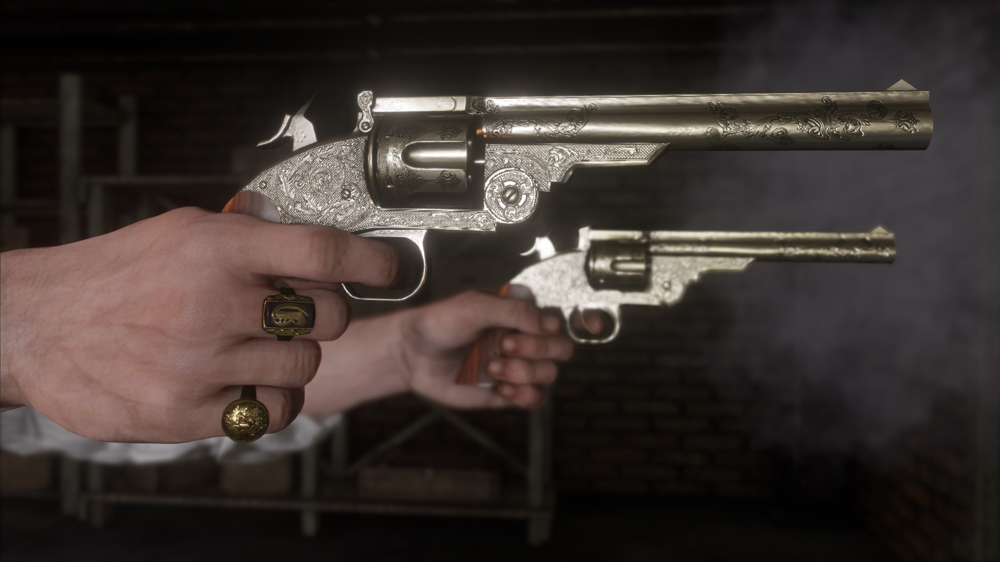
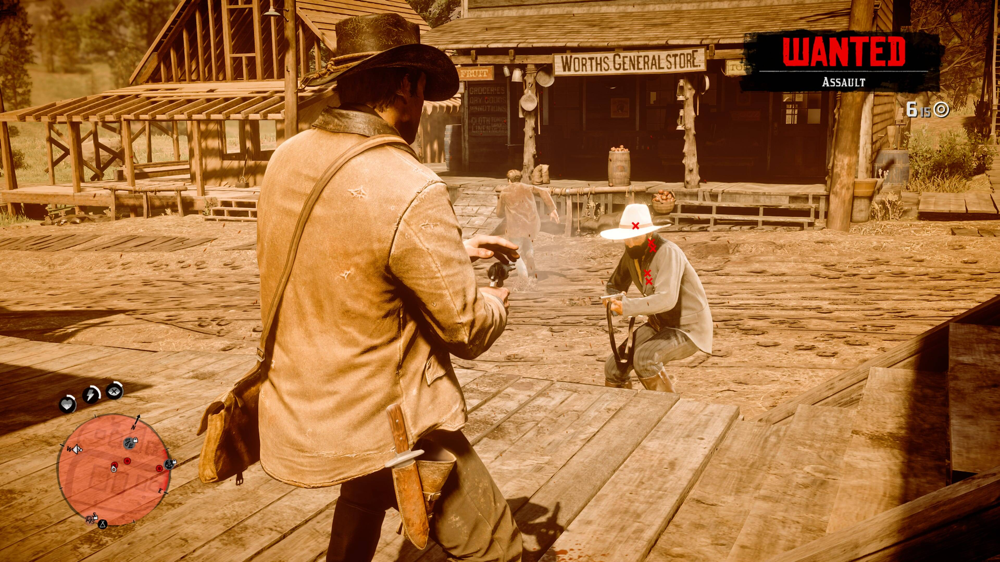

Weaponry
Combat in Red Dead Redemption 2 emphasizes realism and weight, making every gunfight feel intense and impactful. Players have access to a wide range of period-accurate weapons, including revolvers, repeaters, rifles, shotguns, bows, and throwable explosives. Each weapon handles differently, encouraging players to choose firearms that fit their preferred playstyle. The sound design, recoil, and reload animations all contribute to the grounded and cinematic feel of combat.


Weapon Customization
The game allows players to customize and maintain their weapons through gunsmiths located throughout the map. Weapons can be upgraded with improved barrels, sights, grips, and engravings that enhance both performance and appearance. Players can also change metals, varnishes, and carvings to create personalized firearms that match their style. Maintaining weapons is equally important, as dirty or damaged guns lose effectiveness over time, adding another layer of realism to the experience.
Dead Eye
Dead Eye is one of the game’s signature mechanics, allowing players to slow time and precisely target enemies during combat. As players activate Dead Eye, they can mark multiple targets before firing in rapid succession, creating cinematic shootouts inspired by classic western films. The ability evolves throughout the story, eventually allowing for manual targeting and critical hit selection. Dead Eye not only makes combat more strategic but also reinforces the fantasy of becoming a legendary gunslinger.
